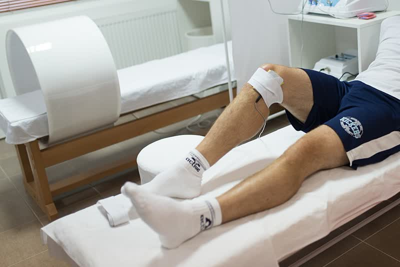

Injuries
Getting cut or aging out is one thing, at least you kind of see it coming. An injury is different because it takes the decision away from you. You did not pick the day you stopped, your body picked it for you, and that messes with your head in a way that is hard to explain to somebody who never played.


It Was Not One Big Injury
For me it was football and tennis, through high school and then some in college. There was never one moment where something snapped and that was it. It was small stuff that kept stacking. You rehab one thing, you come back, something else tweaks, you rehab that. Every single one on its own was not a big deal, which is exactly why it took so long to notice they added up to me being done.
That version is sneaky because nobody around you treats it like a career ending thing. There is no stretcher, no big moment, no goodbye game. You just slowly play less until one day you realize you are not really competing anymore.
Rehab Is Its Own Season
The part nobody tells you is that rehab takes the spot practice used to have. Same kind of schedule, same showing up when you do not feel like it, except there is no game at the end of the week. I think that is why so many people quit on it halfway. Treating it like a season with an actual goal at the end made it way easier for me to keep going.
What Rec Level Looks Like After
I play at the rec level now and honestly it is still really good. It is just a different deal than before.
- Warming up is not optional anymore, it is most of the reason I can still play the next day.
- I pick games where I can sub out, which is why pickup is great coming back from something.
- When something tweaks I stop, which is the exact opposite of what I did when I was competing.
- If anything is actually hurting, get it looked at by a doctor or a physical therapist instead of guessing. This page is just one guy's experience and not medical advice.
Common Questions
Is it normal to feel weird about not competing anymore?
Yeah. You lose the sport, the team, and the schedule all at the same time, so feeling off for a while makes sense. It is a big part of why this site exists.
Can I still play if I got hurt a lot?
For a lot of people yes, just at a lower level and with a smarter setup. Check the options on the Keep Playing page and start with the one that lets you control how much you play.
What if I cannot play at all anymore?
Then staying around the sport is still on the table. Coaching, officiating, and helping out with youth teams are all ways to stay in it, and that is what the Stay In The Game page covers.